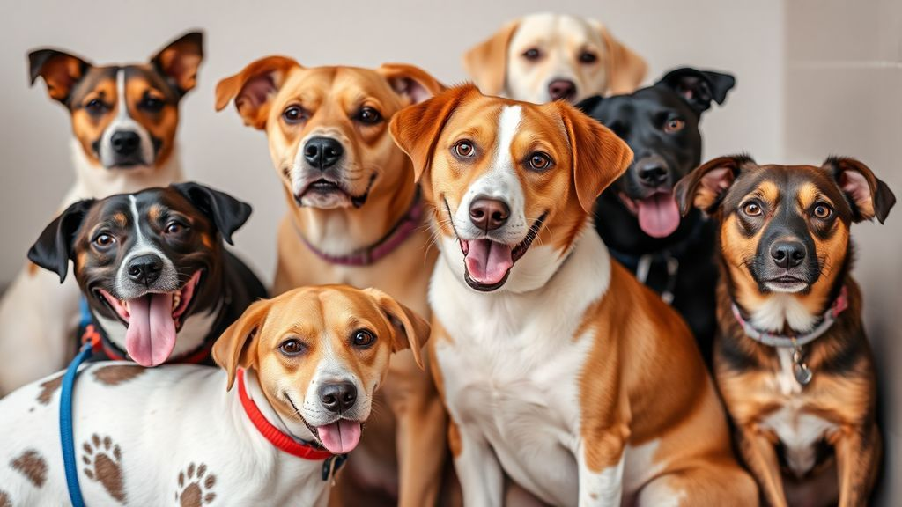

About Us
Our Mission
At Adopt A Friend Animal Rescue, we are passionate about rescuing abandoned, neglected, and unwanted animals and providing them with a second chance at life. Our goal is to connect animals in need with loving, forever homes, and to promote responsible pet ownership. We are dedicated to reducing the number of homeless pets by advocating for adoption and animal welfare, ensuring that every animal has a chance to thrive in a safe, loving environment.
Who We Are
Founded in [Year], Adopt A Friend Animal Rescue is a 501(c)(3) non-profit organization committed to making a difference in the lives of animals. Our team of dedicated volunteers, foster families, veterinarians, and animal care professionals works tirelessly to rescue animals from shelters, provide them with necessary medical care, and place them into loving homes. We also strive to raise awareness about the importance of spaying and neutering and responsible pet care.
Our Programs
- Animal Rescue & Adoption: We rescue animals from high-kill shelters, strays, and cases of neglect or abuse. After receiving medical care and behavioral support, we work hard to match each animal with their perfect forever home.
- Foster Care Program: Our foster care program is essential in providing temporary homes for animals while they await adoption. Foster families provide care, love, and socialization to help these animals transition to their new homes.
- Education & Advocacy: We believe in educating the public about responsible pet ownership, the importance of spaying/neutering, and advocating for animal rights. Through community outreach and educational programs, we empower individuals to make informed decisions about pets.
- Veterinary Care: Every animal in our care receives comprehensive veterinary services, including vaccinations, spaying/neutering, and treatments for any health issues. Our goal is to ensure each animal is healthy and ready for adoption.
Why Adopt?
Adopting an animal from Adopt A Friend Animal Rescue is a life-changing decision. Not only do you give a homeless animal a loving, forever home, but you also gain a loyal and loving companion. Whether you're looking for a playful puppy, a senior dog, or a gentle kitten, we have a variety of animals looking for a second chance. Our adoption process ensures that we match the right animal with the right family, ensuring a lifetime of happiness.
Get Involved
There are many ways you can help us save lives and make a difference in the community. Here are some ways you can get involved:
- Adopt: Visit our Adopt page to find your new best friend.
- Volunteer: Join our team of dedicated volunteers to help us care for animals, assist at events, or spread the word about our mission. Visit our Volunteer page for more information.
- Donate: Your generous donations help provide food, shelter, and medical care for the animals we rescue. Every dollar counts. Visit our Donate page to contribute.